대기환경기사 (2012-09-15 기출문제)
1과목: 대기오염 개론
1. 유효굴뚝높이 100m 인 연돌에서 배출되는 가스량은 10m3/sec, SO2의 농도가 1500ppm 일 때 Sutton식에 의한 최대지표농도는? (단, Ky = Kz = 0.⑤, 평균풍속은 10m/sec 이다.)
- 약 0.008 ppm
- 약 0.035 ppm
- 약 0.078 ppm
- 약 0.116 ppm
(정답률: 74%)

2. 질소산화물(NOx)에 의한 피해 및 영향으로 가장 거리가 먼 것은?
- NO2의 광화학적 분해작용으로 대기 중의 O3 농도가 증가하고 HC가 존재하는 경우에는 Smog를 생성시킨다.
- NO2는 가시광선을 흡수하므로 0.25ppm 정도의 농도에서 가시거리를 상당히 감소시킨다.
- NO2는 습도가 높은 경우 질산이 되어 금속을 부식시키며 산성비의 원인이 된다.
- 인체에 미치는 영향 분석 시 동물을 사용한 연구결과에 의하면 NO2는 주로 위장 장애현상을 초래한다.
(정답률: 56%)
3. 다음은 대기오염물질에 관한 설명이다. ( )안에 공통으로 들어갈 가장 알맞은 것은?
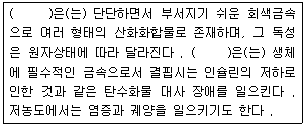
- 크롬
- 코발트
- 비소
- 바나듐
(정답률: 66%)
4. 유효고 50m인 굴뚝에서 NO가 200g/s의 속도로 배출되고있다. 굴뚝 유효고에서의 풍속은 10m/sec 일 때, 500m 풍하방향 중심선상 지표면에서의 NO농도는? (단, σy=30m,, σz=15m)
- 약 3㎍/m3
- 약 5㎍/m3
- 약 27㎍/m3
- 약 55㎍/m3
(정답률: 57%)
5. 436ppm 수준의 일산화탄소에 노출되어 있는 노동자가 있다. 이 노동자의 혈중 카르복실헤모글로빈 (Carboxy - hemoglobin)의 농도가 10% 에 이르게 되는 시간(hr)은? (단, % CO-Hb = β( 1 - e-σt )×[CO] 식을 이용하고, β=0.15%/ppm CO, σ= 0.402 hr-1, [CO] 단위는 ppm )
- 0.21
- 0.41
- 0.61
- 0.81
(정답률: 60%)
6. 다음 오염물질 중 상온에서 무색 투명하고, 순수한 경우에는 냄새가 거의 없지만 일반적으로 불쾌한 자극성 냄새를 가진 액체로서 햇빛에 파괴될 정도로 불안정하지만 부식성은 비교적 약하며, 끓는점은 약 46℃이며, 그 증기는 공기보다 약 2.64배 정도 무거운 것은?
- HCl
- Cl2
- SO2
- CS2
(정답률: 81%)
7. 다음 특정물질 중 오존 파괴지수가 가장 높은 것은?
- Halon-1211
- Halon-2402
- HCFC-31
- Halon-1301
(정답률: 84%)
8. 정규 (Gaussian) 확산 모델과 Turner의 확산 계수(10분 기준)를 이용해서 대기가 약간 불안정할 때 하나의 굴뚝에서 배출되는 SO2의 풍하 1km 지점에서의 지상농도가 0.2ppm인 것으로 평가(계산)하였다면 SO2 의 1시간 평균 농도는? (단,
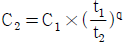
이용, q= 0.17 이다.)- 약 0.26 ppm
- 약 0.22 ppm
- 약 0.18 ppm
- 약 0.15 ppm
(정답률: 66%)
9. 다음 중 침강역전과 상대비교한 복사역전에 관한 설명으로 가장 거리가 먼 것은?
- 복사역전은 장기간 지속되어 단기적인 문제보다는 주로 대기오염물의 장기 축적에 기여한다.
- 복사역전은 지표 가까이에 형성되므로 지표역전이라고도 한다.
- 복사역전은 대기오염물질 배출원이 위치하는 대기층에서 발생된다.
- 복사역전은 일출직전에 하늘이 맑고 바람이 없는 경우에 강하게 생성된다.
(정답률: 57%)
10. 다음은 옥탄가에 관한 설명이다. ( )안에 알맞은 것은?
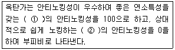
- ① iso-octane , ② n-octane
- ① n-octane , ② iso-octane
- ① iso-octane , ② n-heptane
- ① n-heptane , ② n-octane
(정답률: 83%)
11. 최대혼합고(MMD)에 관한 설명으로 옳지 않은 것은?
- 통상적으로 밤에 가장 낮으며, 낮시간 동안 증가한다.
- 야간 극심한 역전 하에서는 0이 될 수도 있다.
- 낮시간 동안에는 통상 20-30m의 값을 나타낸다.
- 실제 MMD는 지표위 수 km 까지 실제 공기의 온도종단도를 작성함으로써 결정된다.
(정답률: 83%)
12. 다음은 오존량 표현에 관한 설명이다. ( )안에 알맞은 것은?
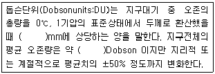
- 0.01 , 3000
- 0.01, 300
- 0.1, 3000
- 0.1, 300
(정답률: 80%)
13. 다음은 대기운동에 관계된 전향력에 관한 설명이다. ( )안에 알맞은 것은?
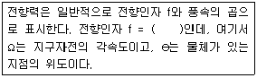
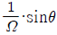
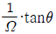
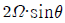
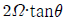
(정답률: 76%)
14. 광화학반응에 의한 고농도 오존이 나타날 수 있는 기상조건으로 거리가 먼 것은?
- 시간당 일사량이 5 MJ/m2 이상으로 일사가 강할 때
- 질소산화물과 휘발성 유기화합물의 배출이 많을 때
- 지면에 복사역전이 존재하고 대기가 불안정할 때
- 기압경도가 완만하여 풍속 4m/sec 이하의 약풍이 지속될 때
(정답률: 79%)
15. 대기 중의 오염물질이 식물에 미치는 영향에 관한 설명으로 가장 적합한 것은?
- 불화수소는 식물의 잎을 주로 갈색으로 변색시킨다.
- 옥시던트는 인체에는 영향을 주지만 식물에 대한 영향은 거의 없다.
- 황산화물은 식물의 성장에 영향을 주지만 잎을 변색시키지는 않는다.
- 아세틸렌은 식물에 미치는 영향이 아주 약하고, 100ppm 정도에서 주로 어린 잎에 영향을 준다.
(정답률: 63%)
16. 열섬현상에 관한 설명으로 가장 거리가 먼 것은?
- Dust dome effect 라고도 하며, 직경 10km 이상의 도시에서 잘 나타나는 현상이다.
- 도시지역 표면의 열적 성질의 차이 및 지표면에서의 증발잠열의 차이 등으로 발생된다.
- 태양의 복사열에 의해 도시에 축적된 열이 주변지역에 비해 크기 때문에 형성된다.
- 대도시에서 발생하는 기후현상으로 주변지역 보다 비가 적게 오며, 건조해져 코, 기관지 염증의 원인이 된다.
(정답률: 78%)
17. 일반 실내공간오염 (indoor air pollution)물질로서 가장 거리가 먼 것은?
- 휘발성유기화합물(VOCs)
- 석면(Asbestos)
- 폼알데하이드(Formaldehyde)
- 염화비닐(Vinyl chloride)
(정답률: 81%)
18. 다음 대기오염물질 중 2차 오염물질에 해당하는 것은?
- CO
- CO2
- N2O3
- NOCl
(정답률: 77%)
19. 대기의 수직구조에 관한 설명으로 가장 적합한 것은?
- 구름이 끼고 비가 내리는 등의 기상현상은 대류권에 국한되어 나타나는 현상이다.
- 대류권은 지상으로부터 약 20-30km 정도의 범위를 말한다.
- 대류권의 높이는 여름보다 겨울이 높다.
- 대류권의 높이는 고위도 지방보다 저위도 지방이 낮다.
(정답률: 75%)
20. NOx에 의한 광화학적 반응에서 HC가 존재시 생성되는 자극성 물질과 가장 거리가 먼 것은?
- 폼알데하이드(HCHO)
- 아세틱 에시드(CH3COOH)
- 퍼옥시 아세틸 나이트레이트(CH3COOONO2)
- 아크롤레인(CH2CHCHO)
(정답률: 59%)
2과목: 연소공학
21. 어떤 1차 반응에서 100초 동안 반응물의 1/2 이 분해되었다면 반응물의 1/10 이 남을 때까지 걸리는 시간은?
- 234초
- 332초
- 498초
- 615초
(정답률: 67%)
22. 액체연료의 연소장치에 관한 각 설명 중 옳지 않은 것은?
- 고압기류 분무식 버너는 연료유의 점도가 커도 분무화가 용이하나 연소 시 소음이 크다.
- 저압기류 분무식 버너의 연료분사범위는 200L/h 정도로 소형설비에 주로 사용된다.
- 증기 분무식 버너는 설비가 비교적 간단하고, 내부혼합식의 연료분사범위는 10-1200L/hr 정도이다.
- 회전식 버너는 분무각도가 40-80°정도이다.
(정답률: 45%)
23. 연소 반응시 공기 중의 질소를 기원으로 하며, Zeldovich Mechanism에 의해 질소산화물이 생성되는 기구는?
- Prompt NOx
- Circulation NOx
- Thermal NOx
- Fuel NOx
(정답률: 58%)
24. 아래 식을 이용하여 C2H4(g) → C2H6(g)로 되는 반응의 엔탈피를 구하면?
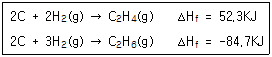
- -137.0 KJ
- -32.4 KJ
- 32.4 KJ
- 137.0 KJ
(정답률: 61%)
25. A + B ⇄ C + D 반응에서 A와 B의 반응물질이 각각 1mol/L 이고, C와 D의 생성물질이 각각 0.5mol/L 일 때, 평형상수 값을 구하면?
- 0.25
- 0.5
- 0.75
- 1.0
(정답률: 49%)
26. 다음 중 전형적인 자기연소를 하는 가연물에 해당하는 것은?
- 아이소옥탄(iso-octane)
- 나이트로 글리세린(Nitro-glycerine)
- 나프타(Naphtha)
- 나프탈렌(Naphthalene)
(정답률: 51%)
27. 다음은 어떤 고체연료에 관한 설명인가?
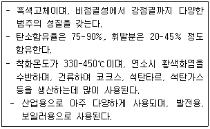
- 갈탄
- 역청탄
- 무연탄
- 이탄
(정답률: 49%)
28. 석탄의 유동층 연소방식에 관한 설명으로 가장 거리가 먼 것은.?
- 화염층을 작게 할 수 있다.
- 건설비와 전열면적이 많이 든다.
- 미분탄장치가 불필요하다.
- 부하변동에 쉽게 응할 수 없다.
(정답률: 41%)
29. 다음 중 저온부식의 원인과 대책에 관한 설명으로 가장 거리가 먼 것은?
- 연소가스 온도를 산노점 온도보다 높게 유지해야 한다.
- 예열공기를 사용하거나 보온시공을 한다.
- 저온부식이 일어날 수 있는 금속표면은 피복을 한다.
- 250℃ 이상의 전열면에 응축하는 황산, 질산 등에 의하여 발생된다.
(정답률: 68%)
30. 다음 중 과잉산소량(잔존 O2량)을 옳게 표시한 것은? (단, A: 실제공기량, Ao: 이론공기량, m: 공기과잉계수(m ＞1), 표준상태이며, 부피기준임)
- 0.21·m·Ao
- 0.21·(m-1)·Ao
- 0.21·m·A
- 0.21·(m-1)·A
(정답률: 76%)
31. 다음의 기체연료 중 고위발열량(kcal/Sm3)이 가장 낮은 것은?
- Ethylene
- Ethane
- Acetylene
- Methane
(정답률: 72%)
32. 석유류의 비중이 커질 때의 특성으로 거리가 먼 것은?
- 착화점이 높아진다.
- 화염의 휘도가 커진다.
- 탄화수소비(C/H)가 커진다.
- 발열량이 증가한다.
(정답률: 50%)
33. 수소 12%, 수분 1%를 함유한 중유 1kg의 발열량을 열량계로 측정하였더니 고위발열량이 10,000 kcal/kg이었다. 비정상적인 보일러의 운전으로 인해 불완전연소에 의한 손실열량이 1400 kcal/kg이라면 연소효율은?
- 82%
- 85%
- 87%
- 90%
(정답률: 55%)
34. 폐가스 소각과 관련한 다음 설명 중 가장 거리가 먼 것은?
- 직접화염 재연소기의 설계 시 반응시간은 0.2-0.7초 정도로 하고, 이 방법은 연소온도가 높아 NOx가 발생된다.
- 직접화염 소각은 가연성 폐가스의 배출량이 적은 경우에 유용하며, 공기를 가하지 않고 폐가스 자체가 가연성 혼합물질로 되어 있는 경우에는 사용할 수 없다.
- 촉매산화법은 고온연소법에 비해 반응온도가 낮은 편이다.
- 촉매산화법은 저농도의 가연물질과 공기를 함유하는 기체 폐기물에 대하여 적용되며 보통 백금 및 파라디움이 촉매로 쓰인다.
(정답률: 50%)
35. C18H20 1.5kg을 완전연소 시킬 때 필요한 이론 공기량(Sm3))?
- 10.4
- 11.5
- 12.6
- 15.6
(정답률: 55%)
36. 다음 중 디젤노킹(diesel knocking)방지법으로 가장 거리가 먼 것은?
- 착화지연 기간 및 급격연소 시간의 분사량을 감소시킨다.
- 급기 온도를 높인다.
- 기관의 압축비를 크게 하여 압축압력을 높게 한다.
- 회전속도를 높인다.
(정답률: 66%)
37. 부탄과 에탄의 혼합가스 1Sm3를 완전연소 시킨 결과 배기가스 중 탄산가스의 생성량이 3.3Sm3이었다면 혼합가스 중의 부탄과 에탄의 mol비 (에탄/부탄)는?
- 2.19
- 1.86
- 0.54
- 0.46
(정답률: 56%)
38. 다음 중 기체연료의 연소형태에 해당하지 않는 것은?
- 확산연소
- 분해연소
- 예혼합연소
- 부분 예혼합연소
(정답률: 71%)
39. 다음 기체연료에 관한 설명으로 옳은 것은?
- 액화석유가스는 대부분 천연가스에서 회수하여 얻어진다.
- 천연가스인 유전가스 중 건성가스는 대부분 메탄이 주성분이다.
- 액화천연가스의 주성분은 부탄과 프로판이다.
- 석탄가스의 주요한 가연성분은 프로판 및 부탄으로서 주로 대규모 난방용 연료로 사용한다.
(정답률: 52%)
40. 분무연소기에서 그을음이 생성되는 것을 방지하기 위한 방법으로 옳지 않은 것은?
- 배기가스 재순환 등에 의해서 연소용 공기의 O2 농도를 증가시켜 포위염 (Envelope flame) 형성을 조장한다.
- 후류염(Wake flame) 형성을 조장하여 예혼합 화염에 가깝게 한다.
- 큰 입경의 분무 액적이 생기지 않게 연료 분사밸브를 사용하여 연소를 균질하게 한다.
- 주위 공기유속을 증대시켜 화염을 예혼합 화염에 가깝게 한다.
(정답률: 33%)
3과목: 대기오염 방지기술
41. A공장의 전기집진장치의 원통형 집진극 반경이 7cm이고, 길이는 1.5m 이다. 처리가스 유속을 1.5m/s로 하고 먼지 입자가 집진극을 향하여 이동하는 먼지속도가 10cm/s라면 집진효율(%)은?
- 90%
- 94%
- 97%
- 99%
(정답률: 43%)
42. 흡수장치에 사용되는 흡수액이 갖추어야 할 요건으로 옳은 것은?
- 용해도가 낮아야 한다.
- 휘발성이 높아야 한다.
- 흡수액의 점성은 비교적 높아야 한다.
- 용매의 화학적 성질과 비슷해야 한다.
(정답률: 64%)
43. 물리적 흡착공정에 관한 설명으로 옳지 않은 것은?
- 기체와 흡착제가 분자간의 인력에 의해 서로 달라붙는다.
- 온도가 낮을수록 흡착량은 많다.
- 흡착공정은 비가역적이다.
- 흡착제의 재생이나 오염가스의 회수가 편리하다.
(정답률: 55%)
44. A공장에 여과 집진장치를 설치하고자 한다. 이 공장에서 배출되는 가스의 양은 200m3/min이며, 먼지의 부하는 6.25g/m3 이라면, 필요한 여과백의 수는? (단, 여과백의 규격은 직경 20cm, 길이 5m, 여과속도는 0.5m/min)
- 128
- 156
- 254
- 304
(정답률: 54%)
45. 일반적으로 대기오염 발생원에서 배출되는 먼지의 입경분포에 대한 자료의 대푯값들을 크기 순으로 나열한 것으로 가장 적합한 것은? (단 산술평균 :  , 최빈값: MO, 중앙값 :Md)
, 최빈값: MO, 중앙값 :Md)
 ＞MO ＞Md
＞MO ＞Md- Md ＞
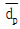
＞MO -
 ＞Md ＞MO
＞Md ＞MO - Md ＞MO ＞

(정답률: 55%)
46. 중력침강을 결정하는 중요 매개변수는 먼지입자의 침전속도이다. 다음 중 이 침전속도 결정 시 가장 관계가 깊은 것은?
- 입자의 유해성
- 입자의 크기와 밀도
- 대기의 분압
- 입자의 온도
(정답률: 78%)
47. 직경이 D인 구형입자의 비표면적(Sv, m2/m3)에 관한 설명으로 옳지 않은 것은? (단, ρ는 구형입자의 밀도)
- 먼지의 입경과 비표면적은 반비례 관계이다.
- 입자가 미세할수록 부착성이 커진다.
- Sv = (3ρ) / D로 나타낸다.
- 비표면적이 크게 되면 원심력 집진장치의 경우에는 장치벽면을 폐색시킨다.
(정답률: 71%)
48. 다음 설명하는 세정집진장치로 가장 적합한 것은?
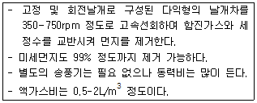
- Impulse Scrubber
- Theisen Washer
- Venturi Scrubber
- Jet Scrubber
(정답률: 51%)
49. 광학현미경으로 입자의 투영면적을 이용하여 측정한 먼지의 입경 중 입자의 투영면적을 2등분하는 선의 길이로 나타내는 것은?
- Martin 직경
- Feret 직경
- 등면적 직경
- Heyhood 직경
(정답률: 80%)
50. 염소농도 0.2%인 굴뚝 배출가스 3000Sm3/hr를 수산화칼슘 용액을 이용하여 염소를 제거하고자 할 때, 이론적으로 필요한 시간당 수산화칼슘의 양은? (단, 처리효율은 100%로 가정한다.)
- 16.7kg
- 18.2kg
- 19.8kg
- 23.1kg
(정답률: 57%)
51. 원형 Duct의 기류에 의한 압력손실에 관한 설명으로 옳지 않은 것은?
- 길이가 길수록 압력손실은 커진다.
- 유속이 클수록 압력손실은 커진다.
- 직경이 클수록 압력손실은 작아진다.
- 곡관이 많을수록 압력손실은 작아진다.
(정답률: 74%)
52. 먼지함유량이 A인 배출가스에서 C만큼 제거시키고 B만큼을 통과시키는 집진장치의 효율산출식으로 거리가 먼 것은?
- C/A
- C/(B + C)
- B/A
- (A - B)/A
(정답률: 75%)
53. 밀도 0.8g/cm3 인 유체의 동점도가 3Stoke 이라면 절대점도는?
- 2.4 poise
- 2.4 centi poise
- 2400 poise
- 2400 centi poise
(정답률: 69%)
54. 송풍기를 운전할 때 필요유량에 과부족을 일으켰을 때 송풍기의 유량조절 방법에 해당하지 않는 것은?
- 회전수 조절법
- 안내익 조절법
- Damper 부착법
- 체걸름 조절법
(정답률: 76%)
55. 여과집진장치에 관한 설명으로 옳지 않은 것은?
- 여과자루 모양에 따라 원통형, 평판형, 봉투형으로 분류되며, 주로 원통형을 사용한다.
- 여과자루 길이(L) / 여과자루 직경(D) ≒ 50 이상으로 많이 설계하고, 여과자루 간의 최소간격은 1.5m 이상이 되어야 한다.
- 간헐식의 경우는 먼지의 재비산이 적고 여포수명이 연속식에 비해 길다.
- 간헐식 중 진동형은 접착성 먼지집진에는 사용할 수 없다.
(정답률: 68%)
56. 벤츄리 스크러버 적용시 액가스비를 크게 하는 요인으로 옳지 않은 것은?
- 먼지의 친수성이 클 때
- 먼지의 입경이 작을 때
- 처리가스의 온도가 높을 때
- 먼지의 농도가 높을 때
(정답률: 73%)
57. A집진장치의 입, 출구에서 배출가스 중 먼지의 농도가 각각 15g/Sm3, 150mg/Sm3 이었고, 입, 출구에서 채취한 먼지시료 중에 포함된 0-5㎛의 입경분포의 중량백분율이 각각 10%, 60% 였다면 이 집진장치의 0-5㎛의 입경범위의 먼지시료에 대한 부분집진율은?
- 94%
- 95%
- 96%
- 97%
(정답률: 56%)
58. 중력 집진장치에서 수평이동속도 Vx, 침강실폭 B, 침강실 수평길이 L, 침강실 높이 H, 종말침강속도를 Vt라면 주어진 입경에 대한 부분집진효율은? (단, 층류기준)
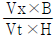
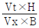
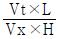
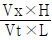
(정답률: 67%)
59. 헨리의 법칙에 관한 설명으로 옳지 않은 것은?
- 비교적 용해도가 작은 기체에 적용된다.
- 헨리상수의 단위는 atm/m3⋅kmol 이다.
- 일정온도에서 특정 유해가스 압력은 용해가스의 액중 농도에 비례한다는 법칙이다.
- 헨리상수는 온도에 따라 변하며, 온도는 높을수록 용해도는 적을수록 커진다.
(정답률: 67%)
60. 배출가스 내 NOx 제거방법 중 건식법에 관한 설명으로 옳지 않은 것은?
- 촉매환원법(CR) 중 선택적 촉매환원법(SCR)은 TiO2와 V2O5를 혼합하여 제조한 촉매에 환원가스를 작용시켜 NOx를 N2로 환원시키는 방법이다.
- 흡착법은 흡착제로서 활성탄, 활성알루미나, 실리카겔 등이 사용되며, NO는 흡착되지만 NO2는 흡착되지 않으므로 환원상태에서 흡착한다.
- 촉매환원법(CR)에서 환원가스로는 대부분의 경우 NH3가스를 사용한다.
- 선택적 비촉매환원법(SNCR)의 단점으로는 배출가스가 고온이어야 하고, 온도가 낮을 경우 미반응된 NH3가 배출될 수 있다.
(정답률: 51%)
4과목: 대기오염 공정시험기준(방법)
61. 대기오염공정시험기준 상 배출가스 중 다이옥신류 농도의 실측치에 대한 단위와 독성등가환산농도의 계산에서 환산계수가 1인 다이옥신류는?
- ㎍/Sm3 : 2. 3. 7. 8 - H7CDF
- ㎍/Sm3 : 1. 2. 3. 7. 8 - P5CDD
- ㎍/Sm3 : 2. 3. 7. 8 - T4CDF
- ㎍/Sm3 : 2. 3. 7. 8 - T4CDD
(정답률: 56%)
62. 굴뚝 배출가스 중 황산화물을 중화적정법으로 분석할 때 사용하는 N/10 수산화나트륨 용액을 표정하기 위하여 술파민산 2.5g을 정확히 달아 물에 녹여 250mL, 용량플라스크에 옮겨 놓고 물로 표선까지 채워 만들었다. 표정 시 적정에서 사용한 N/10 수산화나트륨 용액의 양이 25mL일 경우 역가(f)는 ? (단, 술파민산(NH2SO3H)의 분자량은 97)
- 0.94
- 0.97
- 1.03
- 1.13
(정답률: 38%)
63. 대기오염공정시험기준상 굴뚝 배출가스 중 연속자동 측정대상물질별 측정방법으로 옳게 연결된 것은?
- 먼지 - 광산란적분법
- 아황산가스 - 화학발광법
- 질소산화물 - 불꽃광도법
- 염화수소 - 용액전도율법
(정답률: 40%)
64. 다음 중 아래와 같은 검량선을 가지면서 동일 조건하에 시료를 도입하여 크로마토그램을 기록하고 피이크넓이 (또는 피이크높이)로부터 검량선에 따라 분석하며, 전체 측정조작을 엄밀하게 일정 조건하에서 할 필요가 있을 때 사용하는 크로마토그램 분석방법은?
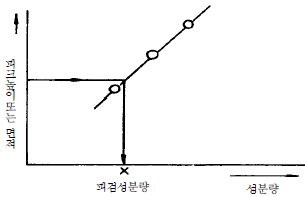
- 절대검량선법
- 피검성분추가법
- 넓이백분율법
- 내부표준검량선법
(정답률: 46%)
65. 다음 중 외부로 비산 배출되는 먼지의 측정방법으로만 옳게 나열된 것은?
- 하이볼륨에어샘플러법 , 불투명도법
- 산화환원법 , 로우볼륨에어샘플러법
- 가스크로마토그래프법 , 흡광차분광법
- 흡광광도법 , 로우볼륨에어샘플러법
(정답률: 42%)
66. 다음은 환경대기 내의 일산화탄소 측정방법 중 수소염이온화 검출기법이다. ( )안에 알맞은 것은?
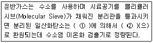
- ① 니켈촉매 , ② 메탄
- ① 요오드 , ② 메탄
- ① 니켈촉매 , ② 탄소
- ① 요오드 , ② 탄소
(정답률: 54%)
67. 굴뚝 배출가스 중 브롬화합물 분석에 사용되는 흡수액으로 옳은 것은?
- 황산 + 과산화수소 + 증류수
- 붕산용액(0.5W/V%)
- 수산화나트륨용액(0.4W/V%)
- 디에틸아민동용액
(정답률: 68%)
68. 환경대기 중 시료채취위치 선정기준으로 옳지 않은 것은?(관련 규정 개정전 문제로 여기서는 기존 정답인 3번을 누르면 정답 처리됩니다. 자세한 내용은 해설을 참고하세요.)
- 주위에 건물 등이 밀집되어 있을 때는 건물 바깥벽으로부터 적어도 1.5m 이상 떨어진 곳에 채취점을 선정한다.
- 시료의 채취높이는 그 부근의 평균오염농도를 나타낼 수 있는 곳으로서 가능한 1.5 - 10m 범위로 한다.
- 주위에 장애물이 있을 경우에는 채취 위치로부터 장애물까지의 거리가 그 장애물 높이의 1.5배 이상이 되도록 한다.
- 주위에 장애물이 있을 경우에는 채취점과 장애물 상단을 연결하는 직선이 수평선과 이루는 각도가 300이하되는 곳을 선정한다.
(정답률: 64%)
69. 비분산 적외선 분석법에서 응답시간에 관한 설명이다. ( )안에 알맞은 것은?
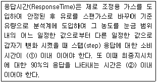
- ① 1초 , ② 1분
- ① 1초 , ② 40초
- ① 10초 , ② 1분
- ① 10초 , ② 40초
(정답률: 69%)
70. 가스 크로마토그래프법에서 분리관 내경이 3mm일 경우 사용되는 흡착제 및 담체의 입경범위(㎛)로 옳은 것은? (단, 기체-고체 가스크로마토그래프법 , 흡착성고체분말 기준)
- 120-149㎛
- 149-177㎛
- 177-250㎛
- 250-590㎛
(정답률: 58%)
71. 원형 굴뚝의 반경이 2.3m 인 경우 배출가스 중 먼지측정을 위한 반경구분수와 측정점 수로 옳은 것은?
- 2 , 8
- 3 , 12
- 4 , 16
- 5 , 20
(정답률: 61%)
72. 발광부에서 나온 빛을 수광부에서 받아들여 광케이블로 분석기 내부로 전달하여 대기오염물질의 분석을 행하는 흡광차 분광법의 분석계 시스템 구성을 순서대로 옳게 나열한 것은?
- 분광기 → 샘플채취부 → 분석부 → 통신부 → 검지부
- 분광기 → 샘플채취부 → 검지부 → 분석부 → 통신부
- 샘플채취부 → 분광기 → 분석부 → 통신부 → 검지부
- 샘플채취부 → 통신부 → 검지부 → 분광기 → 분석부
(정답률: 50%)
73. 다음 중 자외선 가시선 분광법(흡광광도법)에 의한 분석방법이 아닌 것은?
- 피리딘 피라졸론법
- 질산토륨-네오트린법
- 란탄 - 알리자린 콤플렉손법
- 4-아미노안티피린법
(정답률: 39%)
74. 굴뚝 배출가스 중 시안화수소를 질산은 적정법으로 분석할 때 필요한 시약으로 거리가 먼 것은?
- p-디메틸 아미노 벤질리덴 로다닌의 아세톤 용액
- 초산(10V/V%)
- 메틸레드 - 메틸렌 블루우 혼합지시약
- N/100 질산은 용액
(정답률: 55%)
75. 환경대기 중의 가스상 물질을 용매포집법으로 채취할 경우 시료 채취장치의 배열 순서로 옳은 것은?
- 흡수관 - 흡입펌프 - 유량계 - 트랩
- 흡수관 - 트랩 - 흡입펌프 - 유량계
- 흡수관 - 흡입펌프 - 트랩 - 유량계
- 흡수관 - 유량계 - 트랩 - 흡입펌프
(정답률: 55%)
76. 다음 액체시약 중 비중이 가장 큰 것은? (단, 브롬의 원자량은 79.9 , 염소는 35.5, 요오드는 126.9 이다. )
- 브롬화수소산(HBr, 농도: 49%)
- 염산(HCl , 농도: 37%)
- 질산(HNO3 , 농도: 62%)
- 요오드화수소산(HI , 농도: 58%)
(정답률: 70%)
77. "물질을 취급 또는 보관하는 동안에 이물(異粅)이 들어가거나 내용물이 손실되지 않도록 보호하는 용기"로 정의되는 것은?
- 차광용기(遮 光 容 器)
- 밀폐용기(密 閉 容 器)
- 기밀용기(機 密 容 器)
- 밀봉용기(密 封 容 器)
(정답률: 67%)
78. 굴뚝 내부 단면의 가로 길이가 2m이고, 세로 길이가 1.5m일 때 이 굴뚝의 환산직경은? (단, 굴뚝 단면은 사각형이며 , 상하 동일 단면적을 가진 굴뚝이다. )
- 1.5m
- 1.7m
- 1.9m
- 2.0m
(정답률: 64%)
79. 굴뚝 배출가스의 유속을 피토우관으로 측정하고자 한다. 경사마노미터의 확대율이 10배이고, 내부의 액체로 비중 0.85인 톨루엔을 사용하여 동압을 측정하였더니 경사관 액주의 길이가 70mm이었다. 이 경우 측정점에서의 배출가스 유속(m/s)은? (단, 피토우관 계수는 1 , 굴뚝 내의 배출가스 밀도는 1.3 kg/m3 이다.)
- 9.5
- 11.5
- 13.5
- 15.5
(정답률: 47%)
80. 이온크로마토그래피 설치조건(기준)으로 가장 거리가 먼 것은?
- 부식성 가스 및 먼지발생이 적고 , 진동이 없으며 직사광선을 피해야 한다.
- 대형변압기 , 고주파가열로 등으로부터의 전자유도를 받지 않아야 한다.
- 실온 10-25℃, 상대습도 30-85% 범위로 급격한 온도 변화가 없어야 한다.
- 공급전원은 기기의 사양에 지정된 전압 전기용량 및 주파수로 전압변동은 30% 이하이고 , 급격한 주파수 변동이 없어야 한다.
(정답률: 56%)
5과목: 대기환경관계법규
81. 대기환경보전법상 "온실가스"가 아닌 것은?
- 이산화탄소
- 수소불화탄소
- 이산화질소
- 육불화황
(정답률: 61%)
82. 대기환경보전법상 황사피해방지에 관한 사항으로 거리가 먼 것은?
- 환경부장관은 5년마다 황사피해방지 종합대책을 수립하여야 한다.
- 환경부장관은 종합대책을 수립한 경우에는 이를 관계중앙행정기관의 장 및 시·도지사에게 통보하여야 한다.
- 황사대책위원회와 실무위원회의 구성 및 운영 등에 관하여 필요한 사항은 환경부령으로 정한다.
- 관계 중앙행정기관의 장 및 시·도지사는 매년 소관별 추진대책을 수립·시행하여야 하며 , 이 경우 그 추진계획과 추진실적을 환경부장관에게 제출하여야 한다.
(정답률: 40%)
83. 대기환경보전법령상 황산화물의 초과부과금 산정기준으로 옳지 않은 것은?(단, 지역구분은 "국토의 계획 및 이용에 관한 법류"에 따른다. )
- 오염물질 1킬로그램당 부과금액은 770원 이다.
- 배출허용기준 초과율이 400% 이상인 경우 부과계수는 5.4를 적용한다.
- 지역별 부과계수로 I 지역은 2를 적용한다.
- 지역별 부과계수로 III 지역은 1.5를 적용한다.
(정답률: 50%)
84. 대기환경보전법규상 휘발성유기화합물 배출 억제·방지시설설치 등에 관한 기준 중 용어 설명으로 옳지 않은 것은?
- "압력완화장치"란 휘발성유기화합물의 제조과정에서 배관 안의 압력증가로 정상적인 작업이 곤란하여 이를 완화하기 위하여 설치된 장치를 말한다.
- "배수장치"란 휘발성유기화합물의 제조·생산과정이나 시설의 보수·수리 등의 과정에서 발생된 각종 폐수를 폐수처리장으로 이송하기 위하여 배출하는 관 , 밸브 , 기타 시설 등을 말한다.
- "부상지붕"이란 액체의 표면과 접촉되지 아니하면서 액체의 높낮이에 따라 움직이는 지붕덮개로서 슬래트 , 콘크리트 등 일체의 구조물을 말한다.
- "검사용 시료채취장치"란 휘발성유기화합물의 제조과정에서 제조 중인 물질에 대한 품질검사 등을 목적으로 그 시료를 채취하기 위하여 설치된 관, 밸브 , 기구 등 일체의 장치를 말한다.
(정답률: 48%)
85. 다음은 대기환경보전법규상 환경부령으로 정하는 첨가제 제조기준에 맞는 제품의 표시방법이다. ( )안에 알맞은 것은?
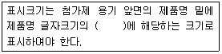
- 100분의 10 이상
- 100분의 20 이상
- 100분의 30 이상
- 100분의 50 이상
(정답률: 75%)
86. 대기환경보전법령상 사업장별 환경기술인의 자격기준에 관한 설명으로 옳지 않은 것은?
- 4종사업장과 5종사업장 중 특정대기유해물질이 포함된 오염물질을 배출하는 경우에는 3종사업장에 해당하는 기술인을 두어야 한다.
- 1종사업장과 2종사업장 중 1개월 동안 실제 작업한 날만을 계산하여 1일 평균 20시간 이상 작업하는 경우에는 해당 사업장의 기술인을 각각 1명 이상 두어야 한다.
- 공동방지시설에서 각 사업장의 대기오염물질 발생량의 합계가 4종사업장과 5종사업장의 규모에 해당하는 경우에는 3종사업장에 해당하는 기술인을 두어야 한다.
- 배출시설 중 일반보일러만 설치한 사업장과 대기 오염물질 중 먼지만 발생하는 사업장은 5종사업장에 해당하는 기술인을 둘 수 있다.
(정답률: 65%)
87. 악취방지법상에서 사용하는 용어의 뜻으로 옳지 않은 것은?
- "상승악취"란 두 가지 이상의 악취물질이 함께 작용하여 사람의 후각을 자극하여 불쾌감과 혐오감을 주는 냄새를 말한다.
- "악취배출시설"이란 악취를 유발하는 시설 , 기계 , 기구 , 그 밖의 것으로 환경부장관이 관계 중앙행정기관의 장과 협의하여 환경부령으로 정하는 것을 말한다.
- "악취"란 황화수소 , 메르캄탄류 , 아민류 , 그 밖에 자극성이 있는 기체상태의 물질이 사람의 후각을 자극하여 불쾌감과 혐오감을 주는 냄새를 말한다.
- "지정악취물질"이란 악취의 원인이 되는 물질로서 환경부령으로 정하는 것을 말한다.
(정답률: 68%)
88. 대기환경보전법규상 대기오염경보단계별 대기오염물질의 농도기준으로 옳은 것은? ( 단, 오존농도는 1시간 평균농도를 기준으로 한 발령이다.)
- 주의보 : 오존농도가 1ppm 이상일 때
경 보 : 오존농도가 3ppm 이상일 때
중대경보:: 오존농도가 5ppm 이상일 때 - 주의보 : 오존농도가 0.1ppm 이상일 때
경 보 : 오존농도가 0.3ppm 이상일 때
중대경보:: 오존농도가 0.5ppm 이상일 때 - 주의보 : 오존농도가 0.12ppm 이상일 때
경 보 : 오존농도가 0.3ppm 이상일 때
중대경보:: 오존농도가 0.5ppm 이상일 때 - 주의보 : 오존농도가 1.2ppm 이상일 때
경 보 : 오존농도가 3ppm 이상일 때
중대경보:: 오존농도가 5ppm 이상일 때
(정답률: 68%)
89. 대기환경보전법상 "대기오염물질"의 정의로써 가장 적합한 것은?
- 연소시에 발생하는 유리탄소를 주로 하는 미세한 입자상물질로서 환경부령으로 정하는 것
- 연소시에 발생하는 유리탄소가 응결하여 입자의 지름이 1미크론 이상이 되는 물질로서 환경부령으로 정하는 것
- 대기오염의 원인이 되는 가스·입자상물질로서 환경부령으로 정하는 것
- 물질의 연소·합성·분해시에 발생하는 고체상 또는 액체상의 물질로서 환경부령으로 정하는 것
(정답률: 60%)
90. 다음은 대기환경보전법규상 고체연료 사용시설 설치기준 중 석탄사용시설 기준이다. ( )안에 알맞은 수치는?
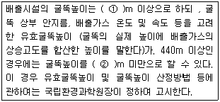
- ① 50 , ② 25
- ① 50 , ② 25 이상 50
- ① 100 , ② 25 이상 100
- ① 100 , ② 60 이상 100
(정답률: 64%)
91. 다중이용시설 등의 실내공기질 관리법규상 오염물질 방출 건축자재의 사용을 제한함에 있어 오염물질이 많이 나오는 건축자재를 고시할 때 포함하여야 하는 사항으로 거리가 먼 것은?
- 공기정화설비 현황
- 측정기간
- 건축자재 생산업체 및 건축자재명
- 오염물질 방출량
(정답률: 38%)
92. 대기환경보전법령상 휘발성유기화합물 규제를 위한 '대통령령으로 정하는 시설' 기준에 해당하지 않는 것은? (단, 그 밖의 시설 등은 고려하지 않는 다. )
- 화학약품 제조업의 제조시설
- 저유소의 저장시설 및 출하시설
- 세탁시설
- 주유소의 저장시설 및 주유시설
(정답률: 59%)
93. 대기환경보전법상 제작차에 대한 인증대행시험기관의 지정취소기준에 해당하지 않는 것은?
- 거짓이나 그 밖의 부정한 방법으로 지정을 받은 경우
- 다른 사람에게 자신의 명의로 인증시험업무를 하게 하는 행위
- 매연 단속결과 간헐적으로 배출허용기준을 초과할 경우
- 환경부령으로 정하는 인증시험의 방법과 절차를 위반하여 인증시험을 하는 행위
(정답률: 72%)
94. 대기환경보전법규상 부식·마모로 인하여 대기오염물질이 누출되도록 정당한 사유 없이 배출시설을 방치한 경우의 3차 행정처분 기준은?
- 개선명령
- 경고
- 조업정지 10일
- 조업정지 30일
(정답률: 57%)
95. 다음은 대기환경보전법령상 환경부장관이 배출시설 설치를 제한할 수 있는 경우이다. ( )안에 알맞은 것은?
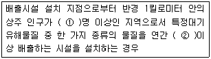
- ① 1만 , ② 5톤
- ① 1만 , ② 10톤
- ① 2만 , ② 5톤
- ① 2만 , ② 10톤
(정답률: 79%)
96. 대기환경보전법규상 대기배출시설 허가 신청서 서식에서 요구하는 첨부서류로 거리가 먼 것은?
- 배출시설 및 방지시설 설치내역서
- 방지시설의 일반도
- 방지시설의 연간 유지관리계획서
- 방지시설 운영일지
(정답률: 46%)
97. 환경정책기본법령상 SO2의 대기환경기준으로 옳은 것은? (단, ① 연간평균치 , ② 24시간 평균치 , ③ 1시간 평균치 )
- ① 0.02ppm 이하 , ② 0.⑤ppm 이하 , ③ 0.15ppm 이하
- ① 0.03ppm 이하 , ② 0.06ppm 이하 , ③ 0.10ppm 이하
- ① 0.⑤ppm 이하 , ② 0.10ppm 이하 , ③ 0.12ppm 이하
- ① 0.06ppm 이하 , ② 0.10ppm 이하 , ③ 0.12ppm 이하
(정답률: 58%)
98. 대기환경보전법규상 위임업무 보고사항 중 보고 횟수가 다른 하나는?
- 자동차 연료 및 첨가제의 제조·판매 또는 사용에 대한 규제현황
- 굴뚝자동측정기기의 정도검사현황
- 배출시설의 설치허가 및 신고 , 대기오염물질 배출상황 검사 , 배출시설에 대한 업무처리현황
- 배출부과금과 징수실적 및 체납 처분 현황
(정답률: 33%)
99. 다음은 대기환경보전법령상 배출시설 설치허가를 받은 자가 허가받은 사항중 "대통령령으로 정하는 중요한 사항"의 변경사항이다. ( )안에 알맞은 것은? ( 단, 배출시설 규모증설의 경우 배출시설 규모의 합계나 누계는 배출구별로 산정))
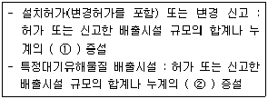
- ① 100분의 30 이상 , ② 100분의 20 이상
- ① 100분의 50 이상 , ② 100분의 20 이상
- ① 100분의 30 이상 , ② 100분의 30 이상
- ① 100분의 50 이상 , ② 100분의 30 이상
(정답률: 59%)
100. 대기환경보전법령상 제작차 배출허용기준과 관련하여 대통령령으로 정하는 오염물질이 아닌 것은? ( 단, 휘발유·알콜 또는 가스를 사용하는 자동차에 한한다.)
- 일산화탄소
- 매연
- 탄화수소
- 알데히드
(정답률: 37%)
Cx = (Q / (2πKyuH)) * exp(-Kzz / H)
여기서, Cx는 최대지표농도, Q는 배출량, Ky와 Kz는 각각 수직방향과 수평방향의 확산계수, u는 평균풍속, H는 유효굴뚝높이, z는 측정지점과 유효굴뚝높이 사이의 거리를 나타낸다.
따라서, 주어진 값들을 대입하면 다음과 같다.
Cx = (10 / (2π * 0.⑤ * 10 * 100)) * exp(-0.⑤ * 0 / 100)
Cx = 0.000318 * 1
Cx = 0.000318 ppm
하지만, 이 값은 SO2의 농도가 0 ppm 일 때의 최대지표농도이다. 따라서, SO2의 농도가 1500ppm 일 때의 최대지표농도는 다음과 같이 계산된다.
최대지표농도 = Cx * (SO2의 농도 / 106)
최대지표농도 = 0.000318 * (1500 / 106)
최대지표농도 = 0.000477 ppm
따라서, 정답은 "약 0.035 ppm"이다.